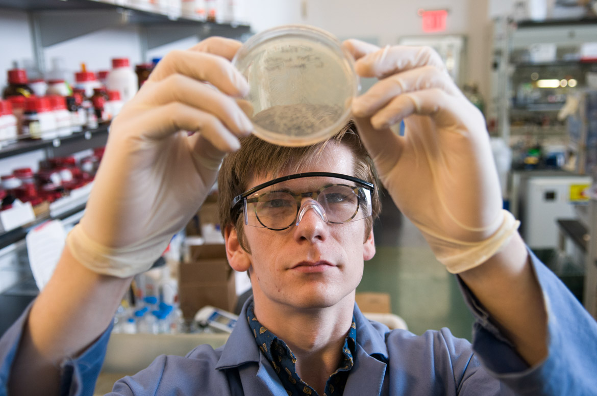

Biophysics at Columbia brings together students, postdoctoral researchers, and faculty working across traditional research disciplines to gain a quantitative, molecular understanding of biological processes. Our community is composed of thirty-three highly dynamic, interdisciplinary, and accomplished research groups drawn from the Departments of Biological Sciences and Chemistry in the Columbia University Arts & Sciences and the Departments of Biochemistry & Molecular Biophysics, Microbiology & Immunology, Ophthalmology, Pathology, Pharmacology, Physiology & Cellular Biophysics, and Psychiatry in the Columbia University Irving School of Medicine.
Our faculty and research groups mentor students from the Doctoral Programs in Biological Sciences and Chemistry and the Coordinated Doctoral Programs in Biomedical Sciences. Integrated curricula provide students with the education and training needed to apply the concepts of physics, chemistry, computer science, and mathematics to biological problems. Shared core facilities bring the latest technical advances to bear on this research by providing our researchers with access to state-of-the-art biophysical instruments, cryogenic electron microscopes, X-ray crystallography radiation sources, and nuclear magnetic resonance spectrometers. More information about our programs, seminars, resources, faculty, and community can be found by following the links in the navigation bar above.
